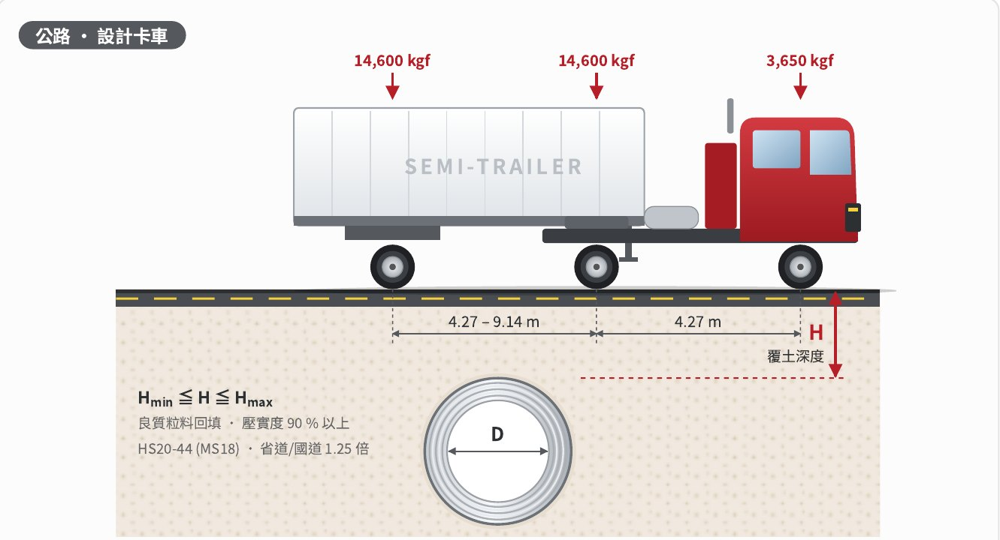
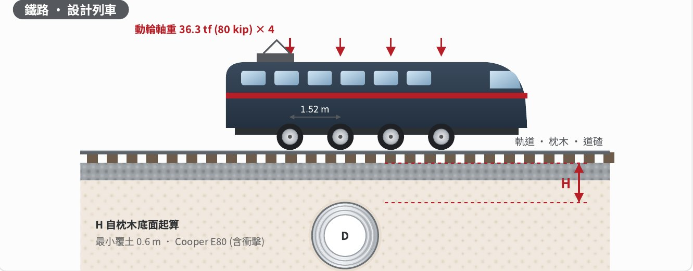

技術資料Technical data기술자료
0RS 螺旋波形鋼管 (波距 38 mm × 波深 6.5 mm) 依 ASTM A796 及 AASHTO 結構設計方法，採用台灣《公路橋梁設計規範》之設計卡車載重及鐵路 Cooper E80 載重，檢核各管徑之最小覆土及最大填土高度。0RS helical pipe (38 × 6.5 mm) checked by the ASTM A796 / AASHTO method for minimum cover and maximum fill under Taiwan highway design trucks and Cooper E80 rail loading.0RS 나선형 파형강관(피치 38 mm × 깊이 6.5 mm)을 ASTM A796·AASHTO 구조설계법에 따라, 대만 「도로교량설계규범」 설계트럭 하중과 철도 Cooper E80 하중으로 관경별 최소토피와 최대성토고를 검토했습니다.
選擇條件，立即判定Set the conditions, get the answer조건을 고르면 바로 판정
依型錄「覆土深度及管體性能表」查表。拖動覆土即可看到埋設斷面隨之變化。Looks up the catalogue cover table. Drag the cover depth and the burial section redraws.카탈로그 「토피 깊이 및 관체 성능표」로 조회합니다. 토피를 끌면 매설 단면이 함께 바뀝니다.
標準條件下之參考值（良質粒料回填、壓實度 90% 以上）。特殊載重、偏壓、軟弱地盤等條件，請洽本公司另行結構計算。Reference values for standard conditions (granular backfill, ≥ 90% compaction). Ask us for a separate calculation for special loads, eccentric pressure or soft ground.표준 조건(양질 입상재 되메움, 다짐도 90% 이상)의 참고값입니다. 특수하중·편토압·연약지반 등은 당사에 별도 구조계산을 요청하세요.
公路設計卡車與鐵路設計列車Highway design truck and rail design train도로 설계트럭과 철도 설계열차
公路：HS20-44 (MS18) 半聯結車，軸重 3,650 / 14,600 / 14,600 kgf，省道 · 國道取 1.25 倍。鐵路：Cooper E80，動輪軸重 36.3 tf × 4，軸距 1.52 m。Highway: HS20-44 (MS18) semi-trailer, axle loads 3,650 / 14,600 / 14,600 kgf, ×1.25 for provincial roads and freeways. Rail: Cooper E80, 36.3 tf × 4 driving axles at 1.52 m.도로: HS20-44(MS18) 세미트레일러, 축하중 3,650 / 14,600 / 14,600 kgf, 성도·국도는 1.25배. 철도: Cooper E80, 동륜 축하중 36.3 tf × 4, 축간 1.52 m.


覆土深度及管體性能表Cover depth and pipe performance토피 깊이 및 관체 성능표
所選管徑以底色標示。The selected diameter is highlighted.선택한 관경은 배경색으로 표시됩니다.
| 管徑Dia.관경 (mm) | 最小覆土Min. cover최소 토피 (m) | t = 1.6 mm | t = 2.0 mm | |||||
|---|---|---|---|---|---|---|---|---|
| 公路Road도로 | 鐵路Rail철도 | 最大填土高度Max. fill최대 성토고 (m) | 管體重量Weight관체 중량 (kg/m) | 5% 變形外壓強度5% defl. load5% 변형 외압강도 (kg/m²) | 最大填土高度Max. fill최대 성토고 (m) | 管體重量Weight관체 중량 (kg/m) | 5% 變形外壓強度5% defl. load5% 변형 외압강도 (kg/m²) | |
※ 最大填土高度超過 100 m 者以「100 以上」表示。※ 管體重量含鍍鋅層 Z27 (275 g/m²)，不含接頭套管。※ 5% 變形外壓強度：管徑發生 5% 變形時之外壓（Iowa 公式，壓實度 90% 粒料回填）。※ Fill heights above 100 m are shown as "100+". ※ Weight includes Z27 (275 g/m²) zinc, excluding sleeves. ※ 5% deflection load: external pressure at 5% diameter change (Iowa formula, granular backfill at 90%).※ 최대성토고 100 m 초과는 「100 이상」으로 표시. ※ 관체 중량은 아연도금 Z27(275 g/m²) 포함, 슬리브 제외. ※ 5% 변형 외압강도: 관경이 5% 변형될 때의 외압 (Iowa 공식, 다짐도 90% 입상재 되메움).
計算依據Calculation basis계산 근거
| 設計規範Code설계 기준 | ASTM A796 / AASHTO |
|---|---|
| 公路載重Highway도로 하중 | HS20-44 (MS18) 一般道路；1.25 × HS20-44 省道 · 市區重要道路 · 國道HS20-44 (MS18) local roads; 1.25 × HS20-44 provincial, major urban roads, freewaysHS20-44(MS18) 일반도로; 1.25 × HS20-44 성도·시내 주요도로·국도 |
| 鐵路載重Railway철도 하중 | Cooper E80（動輪軸重 36.3 tf，含衝擊）Cooper E80 (36.3 tf axle, impact incl.)Cooper E80 (동륜 축하중 36.3 tf, 충격 포함) |
| 衝擊係數Impact충격계수 | 0–0.3 m 30% · 0.3–0.6 m 20% · 0.6–0.9 m 10% · ≥ 0.9 m 0% |
| 土壤單位重Soil weight흙 단위중량 | 1,920 kgf/m³ |
| 安全係數Safety factor안전율 | 管壁及挫屈 SF = 2.0；H ≥ D 時 K = 0.75Wall and buckling SF = 2.0; K = 0.75 when H ≥ D관벽·좌굴 SF = 2.0; H ≥ D일 때 K = 0.75 |
| 撓性係數Flexibility연성계수 | FF ≤ 0.245 mm/N（全管徑滿足）FF ≤ 0.245 mm/N (all diameters)FF ≤ 0.245 mm/N (전 관경 만족) |
使用本表時When using the table이 표를 쓸 때
- 公路最小覆土自鋪面底層起算 0.3 m 以上，鐵路自枕木底面起算 0.6 m 以上；施工中重型機具通過時，應另行確保臨時覆土。Minimum cover: 0.3 m below pavement (road), 0.6 m below sleepers (rail). Provide temporary cover where heavy plant crosses during construction.도로 최소토피는 포장 하면부터 0.3 m 이상, 철도는 침목 하면부터 0.6 m 이상. 시공 중 중장비가 지나갈 때는 임시 토피를 따로 확보하세요.
- 回填材料應為良質粒料，管側兩側均勻分層壓實，壓實度 AASHTO T99 90% 以上。Use good granular backfill, compacted evenly on both sides in layers to ≥ 90% (AASHTO T99).되메움재는 양질 입상재로, 관 양측을 고르게 층다짐해 다짐도 AASHTO T99 90% 이상.
- 本表為標準條件下之參考值，特殊載重 · 偏壓 · 軟弱地盤等條件應另行結構計算。Reference values for standard conditions; special loads, eccentric pressure or soft ground need a separate calculation.이 표는 표준 조건의 참고값이며, 특수하중·편토압·연약지반 등은 별도 구조계산이 필요합니다.
設計單位參考For design offices설계사 참고
本公司產品與計算所依據之規範一覽，供公共工程設計及審查參考。The standards behind our products and calculations, for public-works design and review.당사 제품과 계산의 근거 기준 목록으로, 공공공사 설계·심사 참고용입니다.
| 項目Item항목 | 規範Standard기준 | 內容Scope내용 |
|---|---|---|
| 產品規格Product제품 규격 | CNS 6920 附錄 BAnnex B부록 B | 螺旋波形鋼管種類、斷面尺寸與容許誤差Helical corrugated pipe types, profile dimensions and tolerances나선형 파형강관 종류, 단면 치수와 허용오차 |
| 原物料Base steel원자재 | CNS 1244 · CNS 16166 | 熱浸鍍鋅鋼片及鋼捲；熱浸鍍鋅鋁鎂合金鋼片及鋼捲Hot-dip galvanized sheet and coil; hot-dip Zn-Al-Mg coated sheet and coil용융아연도금 강판·코일; 용융 아연·알루미늄·마그네슘 합금도금 강판·코일 |
| 結構設計Structural design구조설계 | ASTM A796 · AASHTO | 管壁環向壓力、挫屈、撓性係數Ring compression, buckling, flexibility factor관벽 링압축, 좌굴, 연성계수 |
| 公路載重Highway load도로 하중 | 公路橋梁設計規範Taiwan Highway Bridge Code도로교량설계규범 | 第 3 章設計卡車 HS20-44 (MS18)；3.13 衝擊；3.3 土壤單位重Ch. 3 design truck HS20-44 (MS18); 3.13 impact; 3.3 soil unit weight제3장 설계트럭 HS20-44(MS18); 3.13 충격; 3.3 흙 단위중량 |
| 鐵路載重Rail load철도 하중 | Cooper E80 · AREMA | 涵蓋臺鐵 KS-18（軸重 18 tf）Covers TRA KS-18 (18 tf axle)대만철도 KS-18 (축하중 18 tf) 포함 |
| 壓實度Compaction다짐도 | AASHTO T99 | 回填壓實度 90% 以上Backfill compaction ≥ 90%되메움 다짐도 90% 이상 |
| 變形Deflection변형 | Iowa | 5% 變形外壓強度External load at 5% deflection5% 변형 외압강도 |
| 品質系統Quality품질 시스템 | ISO 9001:2015 | REXSTEEL Inc. |
REX-CSP v1.0
REXSTEEL 自行開發之埋設式螺旋波形鋼管 (0RS · 1RS · 3RS) 結構檢核程式。依 ASTM A796 · AASHTO 及台灣設計載重計算，直接輸出可提交業主及設計單位之結構計算書。REXSTEEL's in-house checking program for buried helical pipe (0RS · 1RS · 3RS) to ASTM A796 / AASHTO with Taiwan design loads, producing reports ready for owners and designers.REXSTEEL이 자체 개발한 매설 나선형 파형강관(0RS·1RS·3RS) 구조검토 프로그램입니다. ASTM A796·AASHTO와 대만 설계하중으로 계산하고, 발주처와 설계사에 제출할 구조계산서를 바로 출력합니다.
- 管壁環向壓力、挫屈、撓性係數、最小覆土、撓度檢核Ring compression, buckling, flexibility, minimum cover and deflection관벽 링압축, 좌굴, 연성계수, 최소토피, 처짐 검토
- 全管徑 · 板厚之適用範圍表，可輸出 ExcelCover tables for all diameters and thicknesses, Excel export전 관경·두께 적용범위표, Excel 출력
- Word 計算書（繁體中文 / 韓文）Word reports (Traditional Chinese / Korean)Word 계산서 (번체 중국어 / 한국어)